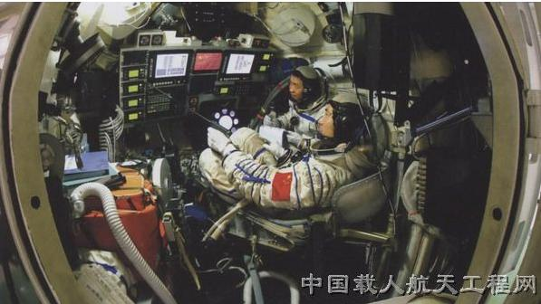

2005年10月12日至16日，我国航天员费俊龙，聂海胜乘坐“神舟”六号载人飞船，在太空绕地球运行76圈，历时4天19小时33分，实现了多人多天飞行并安全返回主着陆场。轨道舱留轨运行了707天，开展了大量的科学实验，为长寿命空间飞行器的研制积累了经验。
神舟六号载人飞船与神舟五号载人飞船在外形上没有差别，仍为推进舱、返回舱、轨道舱的三舱结构，重量基本保持在8吨左右，用长征二号F型运载火箭进行发射。它是中国第二艘搭载航天员的飞船，也是中国第一艘执行“多人多天”任务的载人飞船。
飞船上新增加了40余台设备和6个软件，使飞船的设备达到600余台，软件82个，元器件10万余件，做出了4个方面110项技术改进。
围绕两人多天任务的改进：食品柜得到真正使用，通过水箱和单独的软包装两种方式准备了航天员用水。扩大了冷凝水箱，把所有裸露管线都贴上了吸水材料，确保飞船湿度控制在80%以下。
在轨道舱功能使用方面做了改进，放置了食品加热装置和餐具等。轨道舱中挂有一个睡袋，供两名航天员轮流休息用。轨道舱中还有一个专门的清洁用品柜，航天员可以用里面的温巾等物品进行清洁。大小便收集装置这次也是首次使用。
在提高航天员安全性方面也做了改进，对航天员的坐椅缓冲器进行了重新设计，使返回前坐椅提升后航天员可以看到舷窗外的情况。研制成功了返回舱与轨道舱之间的舱门密闭快速自动检测装置。研制出一种专用抹布，这种布不产生纤维、静电、异味，专门用来清洁舱门。
此外，还进行了持续性改进，“黑匣子”不仅存储量比原来大了100倍，而且数据的写入和读出速度也提高了10倍以上，体积却不到原来的一半。
